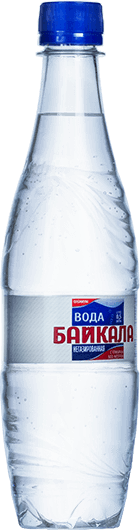
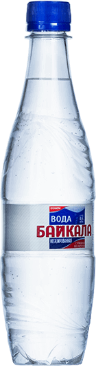

Загрузка 0%
Загрузка 0%
Ru / En
 
Вода
Байкала
Объем
0.33-19л
Удаленность точки водозабора
1 600 МЕТРОВ
Точка забора воды находится на глубине
500 МЕТРОВ
Прокрутите вниз
Контроль качества
Технология водоподготовки осуществляется по научно обоснованному патенту «Лимнологического института Сибирского отделения Российской академии наук». Технологический процесс розлива спроектирован таким образом, при котором природная уникальность байкальской воды сохраняется на очень длительный срок.
Отвечаем самым строгим стандартам качества питьевой воды,
принятым в мировом собществе.
Уникальность Байкальской Воды: Вода озера Байкал содержит 15,2 мг в литре кальция и 4,2 мг/л магния. В воде Ладожского озера кальция 7,1 мг/л, а магния 1,9 мг/л ,а вода альпийских озер, на берегах которых селились древние европейцы, еще менее минерализована.
Высокая насыщенность кислородом
12 мг/л
Оптимальная минерализация
100 мг/л
Величина pH воды близка к pH крови человека
pH воды ≈ pH крови
Компания ООО «Аква» основана
в 1999 году
Производство глубинной, байкальской воды
16 лет
Объем ПЭТ тары собственного производства
от 0,33 до 19 л
ПЕЙТЕ ВОДУ БАЙКАЛА
НЕ ТОЛЬКО ДОМА,
но и на улице, в машине
или офисе!
Ваша заявка принята, мы свяжемся с вами в ближайшее время.